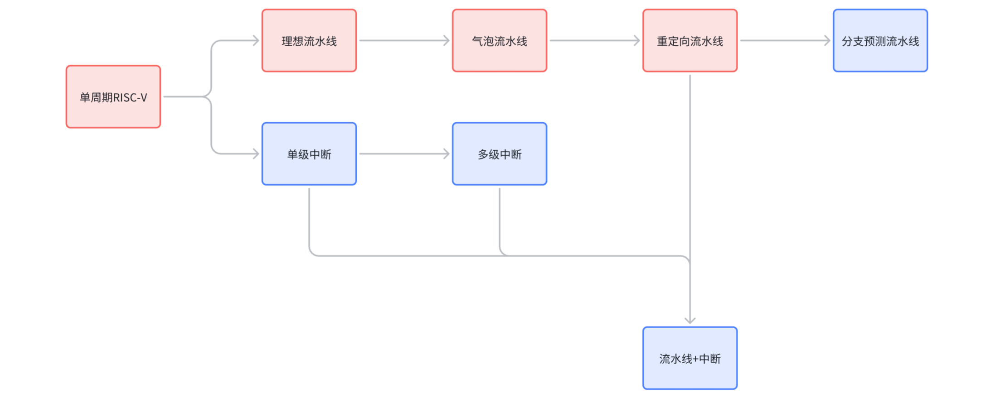
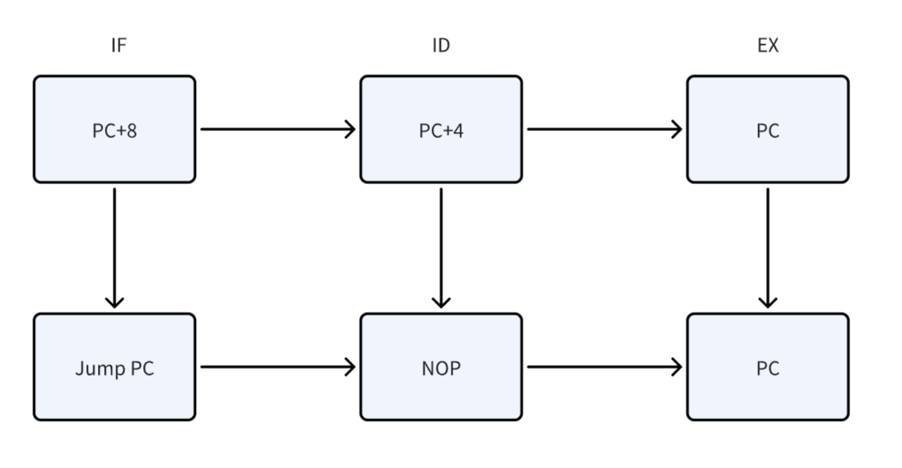
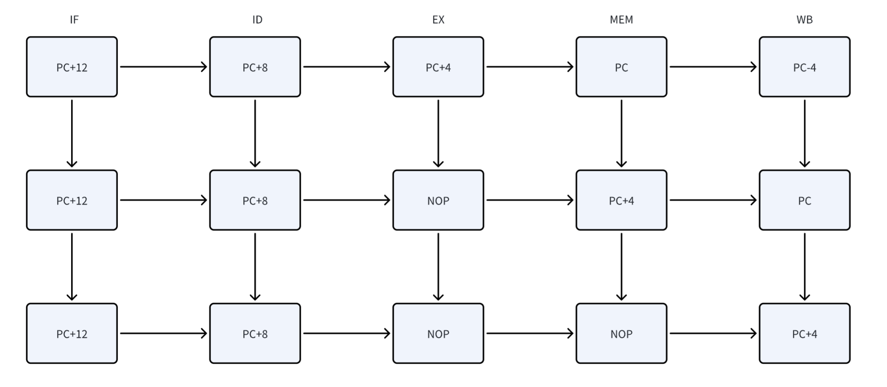
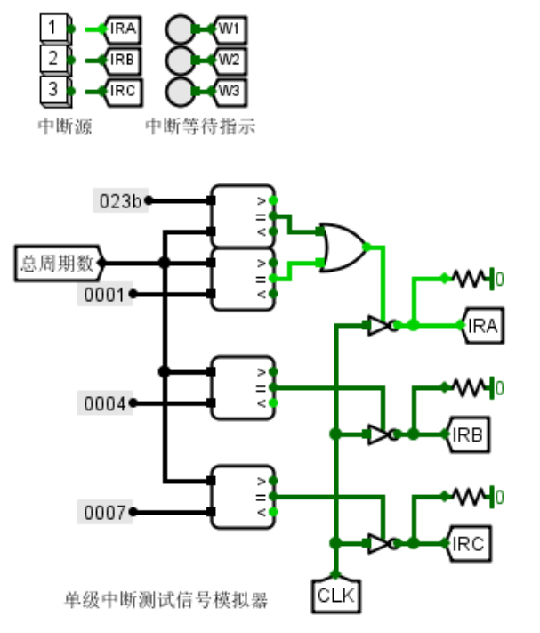
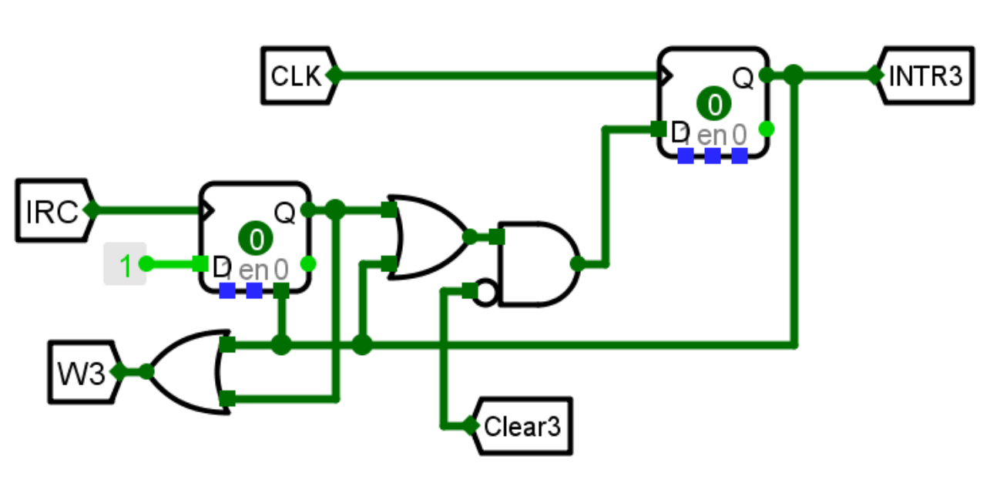

任务概览
简单来说，就是先构建一个单周期RISC-V CPU，然后基于此加入中断和流水线功能，最终将二者合并在一起，所以作为根基的单周期CPU的设计一定要恰当，不然之后改进的时候就会很麻烦。每个人都有自己的四条专属的指令，建议在设计单周期CPU时就做完，以免之后每一个任务都额外去补充实现。
以上是实现流程，红色为必做，蓝色为选作，完成图中所有内容后，理论上能拿到实践部分的满分。
单周期RISC-V
先说流程，首先是填表（表的生成那一页的红色字体是自带的，不是错的），然后构建两个子模块，接着就是IR解析，控制信号设置，PC计算，写回数据判断，ECALL处理和周期计数。
再说注意事项：
- 每一条指令都是有写操作的，会对CPU状态产生影响，控制信号的作用主要是控制写操作。而读操作不会影响CPU状态，为了保证单周期需要同时进行所有可能的读操作，并根据控制信号将选出要写入的数据。因此，只要写信号设置正确，任何冗余的操作和读信号都可以放心大胆的写上去。
- 先整体再具体，先实现根据指令的类型使用Splitter提取出对应的字段比如说rd，imm12等，再按照该类型的通用执行流程设计数据流向。实现完整体之后，再考虑带有非共性的指令的实现，比如说sw，jw。中断相关的指令可以先不具体实现，但一定要先预留信号引脚位。
- 最上边自带的显示的数据一定要有效，否则不能通过头歌平台的测试，在提交之前最好把用于测评的代码先加载到指令存储器中。
- halt是ecall使用的暂停标志，Go是在halt状态下解除暂停的标志，针对ecall指令单独设置多个MUX是必要的。
- 跳转指令（BNE，JAL等）的立即数是符号扩展左移1位而不是+4相当的2位，这一点比较特殊。
理想流水线
非常无聊的任务，但是是后面的流水线的基石，也需要花比较长的时间去制作四个接口。
五个阶段需要执行的任务分别是：
- IF：按照规则找出目标PC值，并从指令存储器中取出对应的指令
- ID：根据IR生成所有的控制信号和立即数，访问寄存器堆（包含写回，但是写回内容和信号由WB阶段传递回）
- EX：根据传入的R1和R2或立即数值调用ALU进行计算，以及其他各种计算工作比如跳转语句的PC计算，Ecall显示和暂停计算，跳转是否执行的计算，总之是各种计算中间数值的计算。
- MEM：根据计算的地址访问存储，是性能的瓶颈之处，基本上只有lw，sw这样的指令才会真正用上。
- WB：计算出要写回寄存器组的数据和是否写回的信号，相比MEM的写操作更为复杂，因为MEM阶段的写指令内容很简单。
理想流水线的核心逻辑是，利用多个寄存器将指令的执行分为五个阶段，从而使得每个周期都能处同时处理不同的指令的一个部分，将时间从5n优化到n+4。在理想流水线的阶段，不需要考虑任何因指令形式导致的错误。所以单纯是增加了四个寄存器接口，使得五个阶段的数据能够对应执行的五条不同的指令而不是同一条指令。
请为接口留下两个引脚位置，一个是清零，一个是暂停，前者用于后续的改进，后者用于Ecall指令和改进。除此之外，接口的传递原则是，后面的阶段需要使用到的信号和数据就传递，如果只在目前的阶段使用，就不传递。
关于写操作的问题，存储的写回就不必赘述，因为必做的只有sw指令，写存储信号触发的时候不用像WB阶段进行复杂的数据筛选，直接采用ALU的结果即可，且访存指令之前不存在数据依赖，所以不存在冒险问题。
而寄存器写回比较复杂，因为涉及到对寄存器组异步写，这会导致对于同一个数据访问的竞争，虽然ID/EX接口能够锁住WB阶段传回的值，但在EX和MEM阶段对应的寄存器写操作和ID阶段的同一个寄存器的读操作显然是冲突的，在尚未写回的时候尝试读很明显是错误的，这是理想流水线的第一个问题。
第二个问题是分支预测，分支指令的跳转值需要在EX阶段执行（当然也可以在ID阶段添加额外的内容来计算，不过这也是一种改进流水线，不是理想流水线），所以无法直接得出下一条指令从哪里开始。当得到应该跳转的地址时，此时ID段应该就是这个地址，但是由于之前并不能判断是否跳转，只是默认+4，故ID段执行错误，导致分支冒险。
气泡流水线
对于上述提到的两个问题，气泡流水线的改进非常简单粗暴，那就是插入空指令（气泡）。
先谈分支预测，这里很简单，EX段决定，那么如果EX段是跳转指令并跳转，那就清空IF/ID，ID/EX两个接口的状态，相当于插入一个气泡，此时状态由IF重新开始传递。从最终效果来看，只有在确定要跳转的时候，才会执行分支气泡插入，导致PC对应指令执行的下一条是跳转后的语句（置零产生的空指令NOP没有写操作因为可以无视）。
再谈数据冒险，也很简单，如果下一条语句要用到前两条语句的写结果时，就暂停直到写结果被执行。判断的方式就是将EX/MEM段的Rd代号并和ID段的R1和R2代号进行比较，如果相等且不为0号寄存器且EX/MEM段有写信号时则触发数据冒险。
如果只有MEM段冲突，那么到图中第二列就结束冲突处理了，如果存在EX段冲突，那么到图中第三列才结束冲突处理了，结束冲突处理之后，下一个周期就是正常的全体右移一格，第一格+4。
以上方式是从EX段的方式进行干预，当然也可以从ID段进行干预，比如将分支跳转的计算提前到ID段来决定是否跳转，这需要额外的运算器。
重定向流水线
在气泡流水线的解决方案中，插入空气泡的确能够解决问题，但是这样会降低流水线的效率，有没有一种等待更低的方式呢？那就是重定向流水线，将冲突的数据直接从后面的阶段中给出来，减少等待气泡数，当然这里的重定向专指数据重定向。
数据重定向有两种形式，第一种是EX占用冲突，第二种是MEM占用冲突。这里的冲突又分为寄存器读写冲突和存储器读寄存器读冲突。
由于MEM和WB阶段不直接利用R1和R2的值，所以这里的“脏读”情况实际上只影响了EX阶段，使ID/EX接口传过来的R1和R2在此种情况下不正确。数据重定向就是纠正R1和R2生成正确的R1和R2用于EX阶段的所有计算，故设计R1R和R2R表示实际的情况。无冲突情况下，R1R=R1，R2R=R2。针对R1R和R2R的多种情况，再设计一个筛选用的掩码R1F和R2F，它们在ID阶段就生成并传递到EX阶段，构建R1F和R2F的条件集合就是对应的情况的判断。
- EX + 存储器读寄存器读冲突，由于EX阶段中值没有被读到，所以需要等待到MEM阶段才能给出，所以需要插入一个气泡，这也是唯一等待的时机，等待之后，EX占用冲突便转为了MEM冲突。
- EX + 寄存器读写冲突，在前一个阶段EX计算的结果（实际冲突的数据）传递到了MEM阶段，从MEM中直接获取即可，默认是只有ALU计算结果和JAL，JALR的PC+4结果需要获取。
- MEM + 存储器读寄存器读冲突，此时结果设置为RDin，直接按情况筛选。
- MEM + 寄存器读写冲突，同情况3，此时结果为RDin，直接按情况筛选。
单级中断
单级中断的在此处的概念是，同时只能处理一个中断，如果同时有多个中断信号源，则按照优先度选择先执行的中断，让其他的中断等待。
单级中断的实现思路是，每条指令执行完之后，如果有中断信号发出，且目前没有关中断，则关中断，保存下一条语句的PC，加载对应中断处理程序的PC，处理完之后加载回保存的PC，并开中断，清除中断处理信号。
由于单级中断不存在嵌套处理，所以不需要实现CSRRSI/CSRRCI这两条指令，只需要实现URET指令及其控制信号即可。
从第一步说起，需要处理中断信号输入，给定的信号发生器如下：
有两种方式触发，一种是上方的手动触发，一种是下方的在指定周期触发，提交到头歌平台上是需要采用下方，也就是默认的触发方式。在默认触发方式下，中断信号IRX仅会在对应周期为1，在其他周期为0。除了中断信号，还有中断处理信号INTRX，数量和IRX一致，表示当前正在处理的中断序号，并且设置一个总处理信号INTR，表示正在有中断被处理。
因为中断有排队等待机制，所以需要存储中断信号发送，这里用一个D触发器即可，输入源就是IRX信号，刚好由0->1->0可以触发一次写入。当中断处理完之后，由URET指令带来的控制信号发出中断清除信号ClearX，从而清除该中断。中断信号暂存部分如下：
第二步就是开关中断，这个用一个D触发器实现即可，输入URET和~INTR。
第三步就是PC的更替，添加一个MEPC存储下一条语句的PC，然后选出对应中断处理程序的入口作为新的下一条语句PC输入到PC中，在URET信号存在的时候，将MEPC作为下一条语句PC输入。
最后就是ClearX信号生成，这个配合INTRX和URET信号组合即可。
多级中断
多级中断的中断信息保留，中断入口判断，中断清除和NPC（Next PC）选择模块没有变化。而新增了对CSRRCI/CSRRSI的指令的实现，修改了开关中断，中断优先级比较和MEPC以及中断总处理信号的部分。
第一步是实现CSRRCI/CSRRSI和开关中断，这两个是连在一起的，开中断的条件变得更加复杂，CSRRSI强制开中断，CSRRCI强制关中断，这两条指令在中断处理程序中调用，一般用于保护现场，防止中断被打断无法恢复，除此之外不会被使用，所以使用时一定在处理中断。而CSRRSI的效果直到CSRRCI才结束，所以需要一个D触发器存储CSRRSI的激活和CSRRCI的反激活。
第二步是中断优先级比较模块，只有在当前处理的中断INTROn小于要处理的中断INTRX的优先级且开中断时，才触发总中断处理信号INTR。
最后一部分就是MEPC和INTROn的处理，取而代之，INTR变成了瞬态信号，用于嵌套中断时的现场（PC，INTROn）保存，INTROn具体指出了当前处理的信号标号（2位）。考虑到此时一共会有三种异常信号，所以需要三个寄存器来存储，在INTR或URET信号激活时进行一次更新。这里的处理思路就很简单了，第一层寄存器存储的是当前值，第二层是上一个中断/正常语句的值，第三层是正常语句/0的值。假设按照1->2->3的顺序处理中断，那么此时第一层MEPC就是中断处理程序2被打断的下一条语句，INTROn是3，第二层MEPC是中断处理程序1被打断的下一条语句，INTROn是2，第三层MEPC是正常语句被打断的下一条语句，INTROn是1。可能的嵌套结构如下：

重定向 + 单级中断
这里先复制重定向流水线，再复制单级中断的中断处理的部分，然后将URET改为EX阶段的URET。同时条件重定向的条件加上EX.URET和INTR，最后就是修改EMPC的来源，如果是原来的B型和J型跳转指令，就是计算出来的NPC，如果不是的话，就从前面（IF/ID）的阶段中取。从前面的阶段中取的时候，要分辨是否是连续的URET，如果是那么存储的PC是IF阶段的，反之则是ID阶段的，因此需要一个寄存器存储EX.URET的前态。